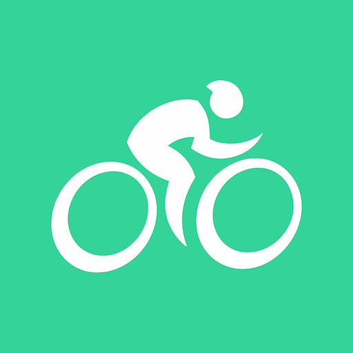

| Project | Description | Notes | Link |
|---|---|---|---|
|  | Combike Records | Shows the Combike Report Summary. | Click here |
| Galaxy Watch 4 Records | Shows the Galaxy Watch 4 Report Summary. | Click here | |
| Relive Records | Shows the Relive Report Summary. | Click here | |
|
Xoss/Strava Records | Shows the Xoss/Strava Report Summary. | Click here |